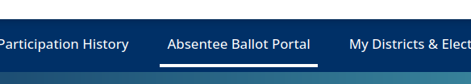
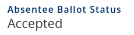
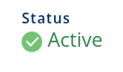
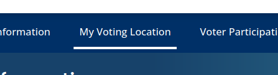

🇺🇸 Georgia General Election 2024 🇺🇸
Your vote matters

On Nov 5, 2024 you'll get a chance to vote for President of the United States as well as numerous other local and state positions.
Important Dates 📅
Registering to Vote
- Oct 7, 2024 - Deadline to Register to Vote in the General Election
Voting Early
- Oct 15, 2024 - First Day of Early Voting
- Nov 01, 2024 - Last Day of Early Voting
Voting by Mail (Absentee)
- Aug 19, 2024 - First Day to request Mail-In (Absentee) Ballot
- Oct 25, 2024 - Last Day to request Mail-In (Absentee) Ballot
- Nov 05, 2024 - Deadline to mail in ballot (must reach by 7PM)
Can I vote early?
Yes! Early voting runs fromTue Oct 15 to Fri Nov 01.
You can visit your polling locations during the following times:
- 9AM to 5PM on weekdays
- 9AM to 4PM on Saturdays
- 9AM to 4PM on Sundays (some counties may not be open on Sunday)
Can I vote in person?
Yes! You can vote in person at your polling location on Tue, Nov 05 2024.
Your polling location will be open from 7AM - 7PM. As long as your are in line by 7PM, you are entitled to vote that day.
Can I vote absentee / vote by mail ?
Yes!
How do I request an absentee ballot?
The state voter guide lists several ways to request a ballot - online, email, mail, fax, or in-person.
All options will require you to fill out the request form print it and sign it. Fortunately, the SOS site provides an online portal that will pre-fill a form that you can print out. It will also let you optionally print, sign, and upload your application online.
If you want to mail the application instead, you'll need to send it to your county's election office.
⚠️ Ballots take time to arrive and time to return, sometimes several weeks. Please request your ballot as soon as possible to avoid any delays.⚠️
How do I submit my absentee ballot?
You can submit your ballot one of 3 ways:
- Drop ballots off at any dropbox location near you. Find a drop box near you.
- Drop ballots off in person at your county's election office
- You can return your ballot via USPS mail. It must arrive before 7PM on Nov 5, 2024.
How Do I check the status of my absentee ballot?
Log in to the Georgia My Voter site using your name and birth date.
Click on "Absentee Ballot Portal" in the navigation.
This page will contain the history of your absentee ballot requests. If your ballot was accepted, you should see it marked as ACCEPTED.
Who is eligible to vote?
Anyone who registered before the deadline of Oct 7, 2024 is eligible to vote in the runoff.
How do I check if I'm registered?
Log in to the Georgia My Voter site using your name and birth date.
If you are registered, you'll see a green ACTIVE check mark:
If you are not "ACTIVE" and you believe it is a mistake, contact the Secretary of State office immediately.
How can I find my polling location?
Log in to the Georgia My Voter site using your name and birth date.
Click on "My Voting Location" in the top navigation.
How can I preview my ballot?
Ballotpedia is a free tool that will allow you to view a sample ballot for your location.
Remember - ballot choices and questions vary by city and county! Not all Georgia ballots are the same
Why Is this important?
Because the United States uses the Electoral College to elect the President, a handful of swing states can determine the outcome of the election. Georgia is one of those states.
Whichever way you lean politically, it's important that you vote to ensure your desired outcome.
The last election came down to a few thousand votes.
Your vote matters in Georgia.